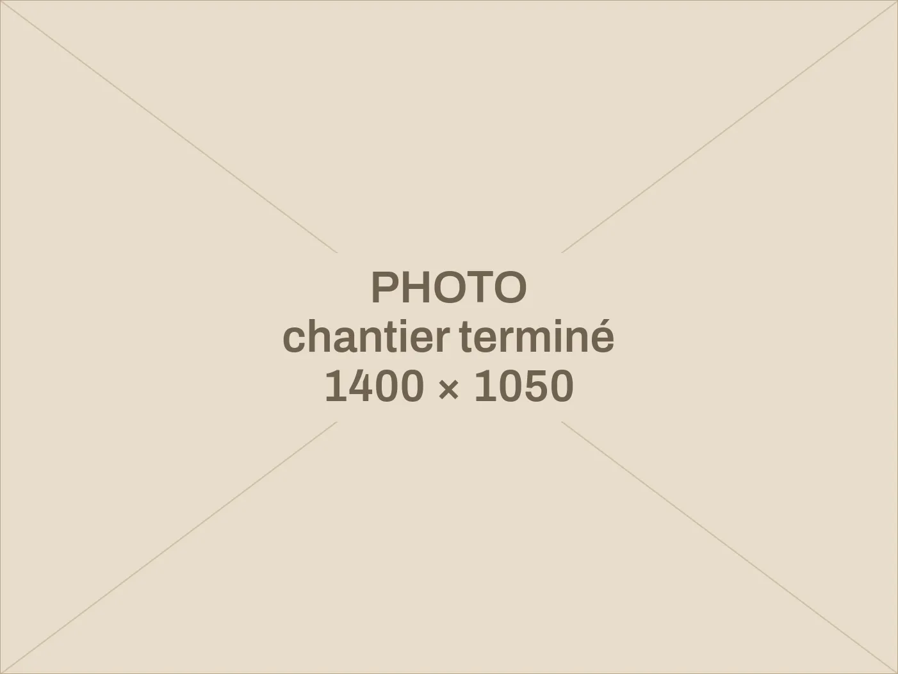
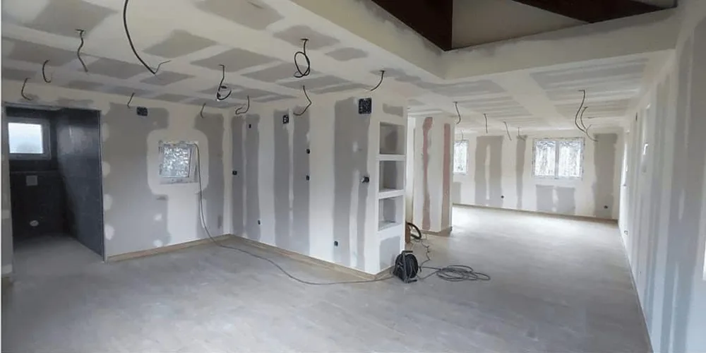
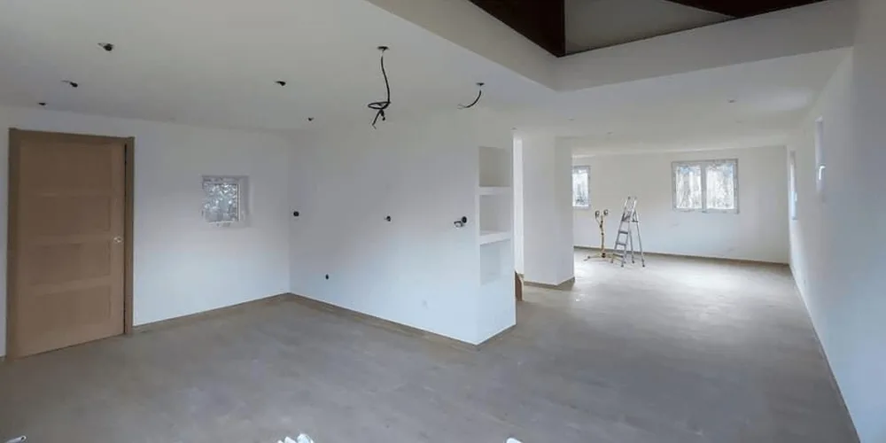
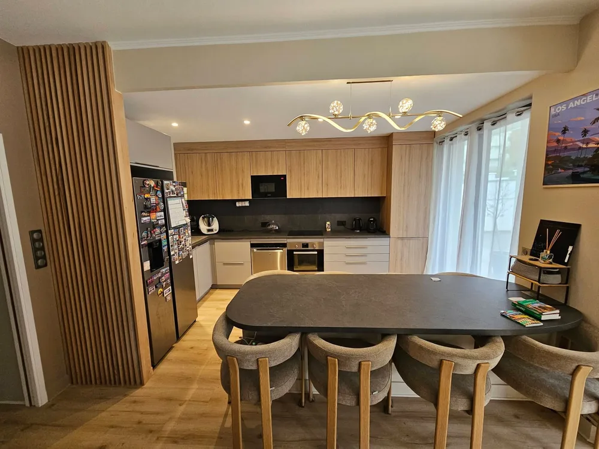
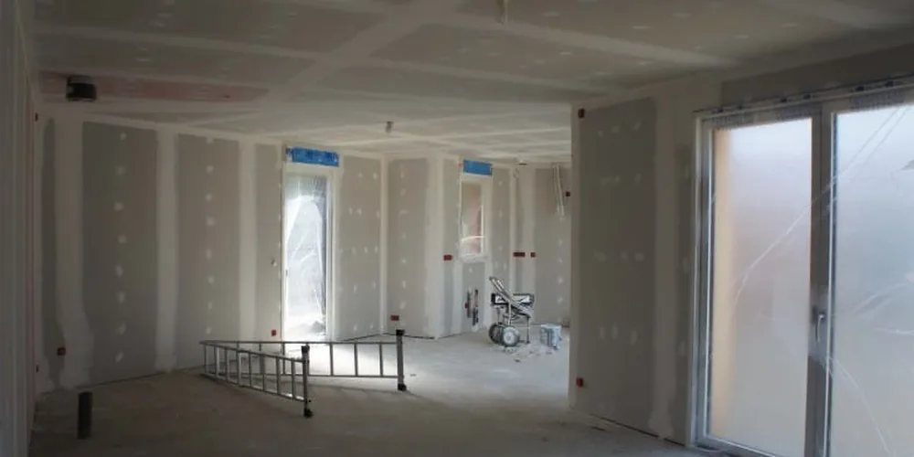
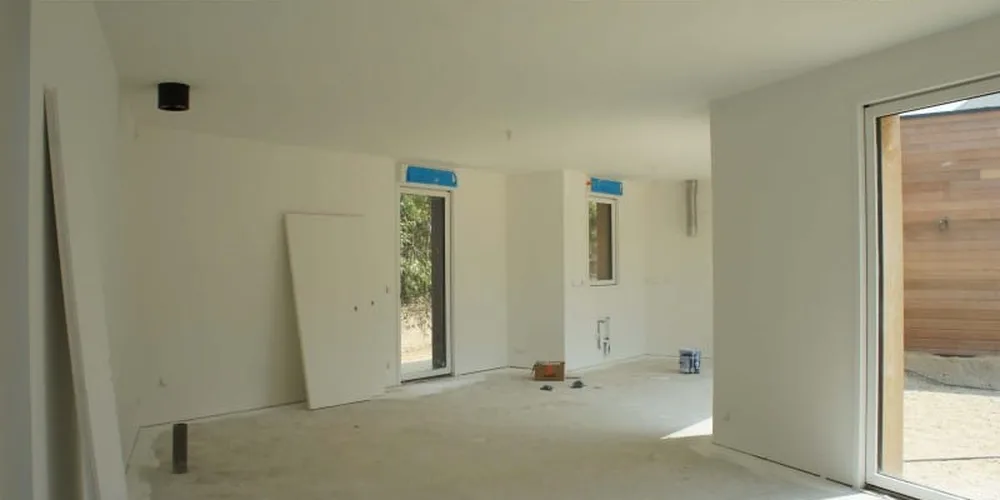
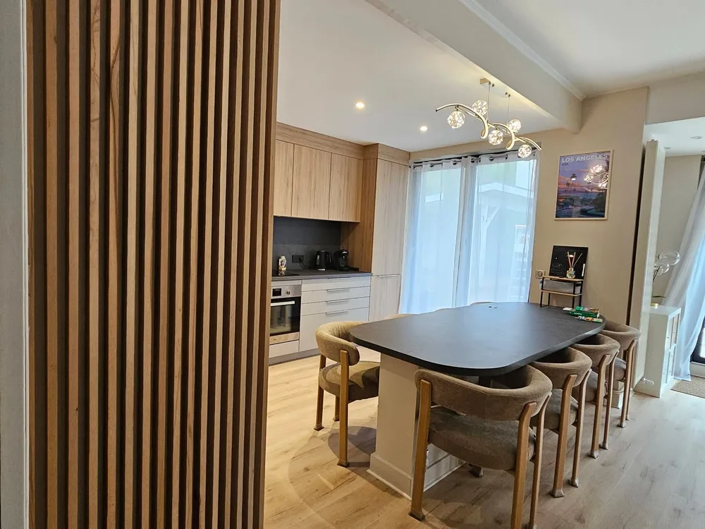
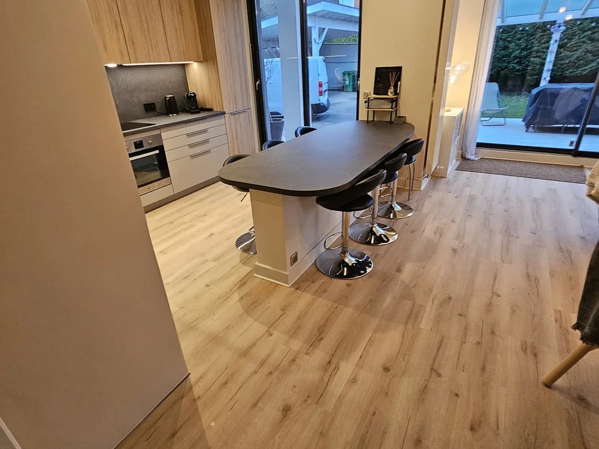
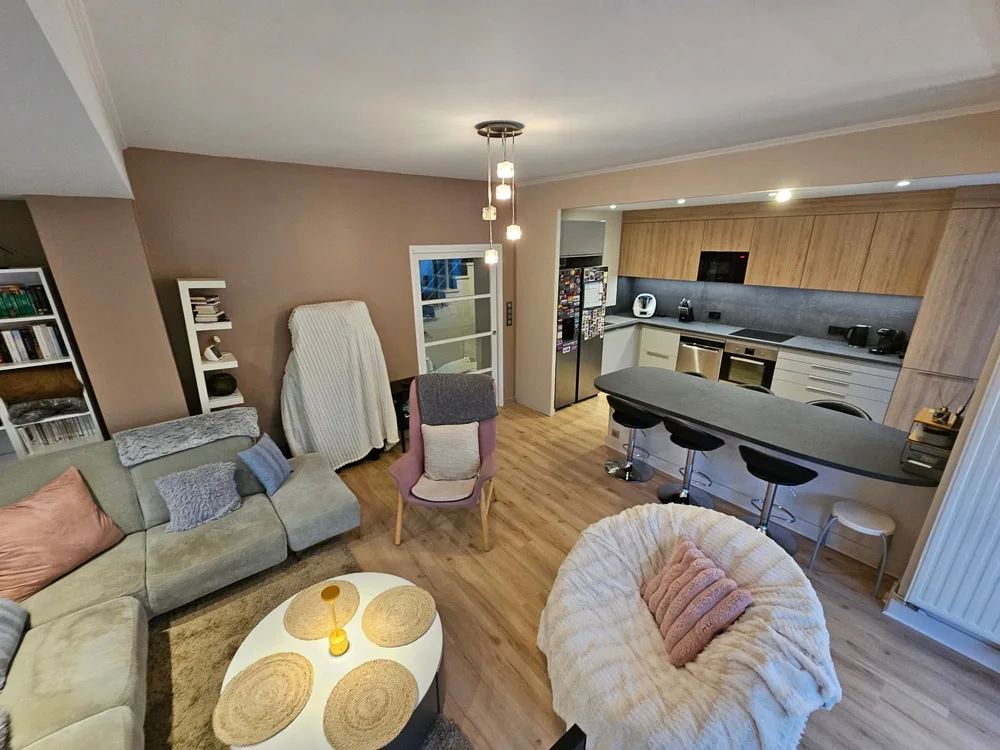

Peintre en bâtiment et rénovation dans l’agglomération grenobloise.
Intérieurs, façades, sols et rénovations complètes. Un devis détaillé avant de commencer, des supports préparés comme il faut, et le chantier rendu propre.

- Blanc de chaux
- Ocre jaune
- Terre de Sienne
- Rouge de Falun
- Bleu ardoise
- Vert sapin
Quelques teintes posées sur des chantiers récents.
Ce que je fais
Du rafraîchissement d’une pièce à la rénovation d’un logement entier.
- Peinture intérieure
- Murs, plafonds, boiseries. Rebouchage, ponçage et sous-couche avant finition.
- Façades et extérieurs
- Nettoyage, traitement, reprise des fissures et mise en peinture. Volets, portails et ferronneries compris.
- Revêtements de sol
- Pose de parquet flottant, stratifié, vinyle et lino, avec ragréage quand le support le demande.
- Papier peint et enduits décoratifs
- Papier peint, toile de verre, enduits à effet. Supports préparés.
- Rénovation complète
- Une pièce ou tout un logement : cloisons, doublage, faux plafonds et finitions, en coordonnant les autres corps de métier si besoin.
- Petits travaux
- Un plafond à reprendre, une pièce à rafraîchir avant une vente ou une location.
Chantiers récents
Quelques exemples de travaux terminés dans l’agglomération.
-

Avant
AprèsBandes, enduits et mise en peinture d’une pièce de vie. -

Pièce de vie ouverte : cuisine, salle à manger et séjour. -

Avant
AprèsPréparation des supports puis finition blanche, murs et plafonds. -

Claustra bois entre l’entrée et la salle à manger. -

Cuisine ouverte, murs et plafond repris. -

Séjour dans la continuité de la cuisine.
Comment se passe un chantier
Quatre étapes, de la première visite au coup de balai final.
-
Visite et devis
Je passe voir le chantier, on parle finitions et teintes, et vous recevez un devis détaillé sous une semaine. La visite est gratuite et n’engage à rien.
-
Préparation et protection
Sols et meubles bâchés, surfaces poncées et rebouchées, sous-couche appliquée. C’est la partie qu’on ne voit pas, et c’est elle qui tient dans le temps.
-
Mise en peinture
Application des finitions convenues au devis. Vous savez où en est le chantier, et les délais annoncés sont ceux que je tiens.
-
Finitions et nettoyage
Reprises, dépose des protections, nettoyage complet. On fait le tour ensemble avant que je parte.
Où j’interviens
Basé à Brié-et-Angonnes, je travaille sur Grenoble et la plupart des communes de la métropole : Eybens, Poisat, Herbeys, Saint-Martin-d’Hères, Gières, Échirolles, Le Pont-de-Claix, Claix, Bresson, Meylan et La Tronche, ainsi que Saint-Martin-d’Uriage, Vizille et Jarrie. Pour un chantier plus loin en Isère, appelez : cela dépend de la taille du projet.
Demander un devis
Le plus simple est d’appeler. Décrivez la pièce ou le logement et nous conviendrons d’une visite.
Par écrit
jeremyhachette@hotmail.frAlternatif Services
281 Chemin de Champaneys
38320 Brié-et-Angonnes
Entreprise assurée en responsabilité décennale.